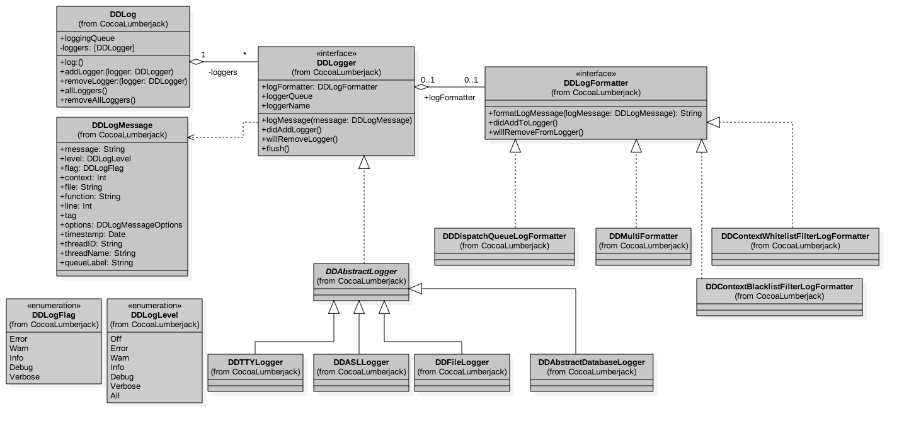

- 00 开篇词 锚定一个点，然后在这个点上深耕.md.html
- 01 建立你自己的iOS开发知识体系.md.html
- 02 App 启动速度怎么做优化与监控？.md.html
- 03 Auto Layout 是怎么进行自动布局的，性能如何？.md.html
- 04 项目大了人员多了，架构怎么设计更合理？.md.html
- 05 链接器：符号是怎么绑定到地址上的？.md.html
- 06 App 如何通过注入动态库的方式实现极速编译调试？.md.html
- 07 Clang、Infer 和 OCLint ，我们应该使用谁来做静态分析？.md.html
- 08 如何利用 Clang 为 App 提质？.md.html
- 09 无侵入的埋点方案如何实现？.md.html
- 10 包大小：如何从资源和代码层面实现全方位瘦身？.md.html
- 11 热点问题答疑（一）：基础模块问题答疑.md.html
- 12 iOS 崩溃千奇百怪，如何全面监控？.md.html
- 13 如何利用 RunLoop 原理去监控卡顿？.md.html
- 14 临近 OOM，如何获取详细内存分配信息，分析内存问题？.md.html
- 15 日志监控：怎样获取 App 中的全量日志？.md.html
- 16 性能监控：衡量 App 质量的那把尺.md.html
- 17 远超你想象的多线程的那些坑.md.html
- 18 怎么减少 App 电量消耗？.md.html
- 19 热点问题答疑（二）：基础模块问题答疑.md.html
- 20 iOS开发的最佳学习路径是什么？.md.html
- 21 除了 Cocoa，iOS还可以用哪些 GUI 框架开发？.md.html
- 22 细说 iOS 响应式框架变迁，哪些思想可以为我所用？.md.html
- 23 如何构造酷炫的物理效果和过场动画效果？.md.html
- 24 A_B 测试：验证决策效果的利器.md.html
- 25 怎样构建底层的发布和订阅事件总线？.md.html
- 26 如何提高 JSON 解析的性能？.md.html
- 27 如何用 Flexbox 思路开发？跟自动布局比，Flexbox 好在哪？.md.html
- 28 怎么应对各种富文本表现需求？.md.html
- 29 如何在 iOS 中进行面向测试驱动开发和面向行为驱动开发？.md.html
- 30 如何制定一套适合自己团队的 iOS 编码规范？.md.html
- 31 iOS 开发学习资料和书单推荐.md.html
- 32 热点问题答疑（三）.md.html
- 33 iOS 系统内核 XNU：App 如何加载？.md.html
- 34 iOS 黑魔法 Runtime Method Swizzling 背后的原理.md.html
- 35 libffi：动态调用和定义 C 函数.md.html
- 36 iOS 是怎么管理内存的？.md.html
- 37 如何编写 Clang 插件？.md.html
- 38 热点问题答疑（四）.md.html
- 39 打通前端与原生的桥梁：JavaScriptCore 能干哪些事情？.md.html
- 40 React Native、Flutter 等，这些跨端方案怎么选？.md.html
- 41 原生布局转到前端布局，开发思路有哪些转变？.md.html
- 42 iOS原生、大前端和Flutter分别是怎么渲染的？.md.html
- 43 剖析使 App 具有动态化和热更新能力的方案.md.html
- 用户故事 我是如何学习这个专栏的？.md.html
- 结束语 慢几步，深几度.md.html
- 捐赠
15 日志监控：怎样获取 App 中的全量日志？
你好，我是戴铭。
我在前面的第12、13和14三篇文章中，和你分享了崩溃、卡顿、内存问题的监控。一旦监控到问题，我们还需要记录下问题的详细信息，形成日志告知开发者，这样开发者才能够从这些日志中定位问题。
但是，很多问题的定位仅靠问题发生的那一刹那记录的信息是不够的，我们还需要依赖更多的日志信息。
在以前公司还没有全量日志的时候，我发现线上有一个上报到服务器的由数据解析出错而引起崩溃的问题。由于数据解析是在生成数据后在另一个线程延迟执行的，所以很难定位到是谁生成的数据造成了崩溃。
如果这个时候，我能够查看到崩溃前的所有日志，包括手动打的日志和无侵入自动埋点的日志，就能够快速定位到是由谁生成的数据造成了崩溃。这些在 App 里记录的所有日志，比如用于记录用户行为和关键操作的日志，就是全量日志了。
有了更多的信息，才更利于开发者去快速、精准地定位各种复杂问题，并提高解决问题的效率。那么，怎样才能够获取到 App 里更多的日志呢？
你可能会觉得获取到全量的日志很容易啊，只要所有数据都通过相同的打日志库，不就可以收集到所有日志了吗？但，现实情况并没有这么简单。
一个 App 很有可能是由多个团队共同开发维护的，不同团队使用的日志库由于历史原因可能都不一样，要么是自己开发的，要么就是使用了不同第三方日志库。如果我们只是为了统一获取日志，而去推动其他团队将以前的日志库代码全部替换掉，明显是不现实的。因为，我们谁也无法确定，这种替换日志库的工作，以后是不是还会再来一次。
那么，我们还有什么好办法来解决这个问题吗？在我看来，要解决这个问题，我们就需要先逐个地分析各团队使用的日志库，使用不侵入的方式去获取所有日志。
接下来，我就先和你说说怎样获取系统自带NSLog的日志。
获取 NSLog 的日志
我们都知道，NSLog其实就是一个C函数，函数声明是：
void NSLog(NSString *format, ...);
它的作用是，输出信息到标准的Error控制台和系统日志（syslog）中。在内部实现上，它其实使用的是ASL（Apple System Logger，是苹果公司自己实现的一套输出日志的接口）的API，将日志消息直接存储在磁盘上。
那么，我们如何才能获取到通过ASL存放在系统日志中的日志呢？
ASL 会提供接口去查找所有的日志，通过 CocoaLumberjack 这个第三方日志库里的 DDASLLogCapture 这个类，我们可以找到实时捕获 NSLog 的方法。DDASLLogCapture会在 start 方法里开启一个异步全局队列去捕获 ASL 存储的日志。start 方法的代码如下：
+ (void)start {
...
dispatch_async(dispatch_get_global_queue(DISPATCH_QUEUE_PRIORITY_DEFAULT, 0), ^(void) {
[self captureAslLogs];
});
}
可以看出，捕获ASL存储日志的主要处理都在 captureAslLogs 方法里。在日志被保存到 ASL 的数据库时，syslogd（系统里用于接收分发日志消息的日志守护进程） 会发出一条通知。因为发过来的这一条通知可能会有多条日志，所以还需要先做些合并的工作，将多条日志进行合并。具体的实现，你可以查看 captureAslLogs 方法的实现，关键代码如下：
+ (void)captureAslLogs {
@autoreleasepool {
...
notify_register_dispatch(kNotifyASLDBUpdate, ¬ifyToken, dispatch_get_global_queue(DISPATCH_QUEUE_PRIORITY_HIGH, 0),^(int token) {
@autoreleasepool {
...
// 利用进程标识兼容在模拟器情况时其他进程日志无效通知
[self configureAslQuery:query];
// 迭代处理所有新日志
aslmsg msg;
aslresponse response = asl_search(NULL, query);
while ((msg = asl_next(response))) {
// 记录日志
[self aslMessageReceived:msg];
lastSeenID = (unsigned long long)atoll(asl_get(msg, ASL_KEY_MSG_ID));
}
asl_release(response);
asl_free(query);
if (_cancel) {
notify_cancel(token);
return;
}
}
});
在上面这段代码中，notify_register_dispatch的作用是用来注册进程间的系统通知。其中，kNotifyASLDBUpdate 宏表示的就是，日志被保存到 ASL 数据库时发出的跨进程通知，其键值是 com.apple.system.logger.message。
既然是跨进程通知，那么多个 App 之间也是可以进行通知的。不过对于 iPhone 来说，多个 App 同时保活的机会太少，所以一般都是接收系统功能发出的通知。
在iOS系统中，类似地把日志保存到 ASL 数据库时发出的通知还有很多种，比如键值是 com.apple.system.lowdiskspace 的 kNotifyVFSLowDiskSpace 宏，该通知是在系统磁盘空间不足时发出的。当捕获到这个通知时，你可以去清理缓存空间，避免发生缓存写入磁盘失败的情况。
更多的跨进程通知宏，你可以在 notify_keys.h 里看到，终端查看命令如下：
cat /usr/include/notify_keys.h
接下来，我继续和你说说 captureAslLogs方法，看看 captureAslLogs 是怎么处理 ASL 日志的。
在captureAslLogs方法里，处理日志的方法是 aslMessageReceived，入参是 aslmsg 类型，由于 aslmsg 类型不是字符串类型，无法直接查看。所以在 aslMessageReceived方法的开始阶段，会使用 asl_get 方法将其转换为 char 字符串类型。类型转换代码如下：
const char* messageCString = asl_get( msg, ASL_KEY_MSG );
接下来，char 字符串会被转换成 NSString类型，NSString 是 Objective-C 里字符串类型，转成 NSString 更容易在 Objective-C 里使用。
NSString *message = @(messageCString);
因为CocoaLumberjack 的日志最后都是通过 DDLog:log:message: 方法进行记录的，其中 message 参数的类型是 DDLogMessage，所以 NSString类型还需要转换成 DDLogMessage 类型。
因为 DDLogMessage 类型包含了日志级别，所以转换类型后还需要设置日志的级别。CocoaLumberjack 这个第三方日志库，将捕获到的 NSLog 日志的级别设置为了 Verbose。那为什么要这么设置呢？
CocoaLumberjack 的日志级别，包括两类：
- 第一类是Verbose 和 Debug ，属于调试级；
- 第二类是Info、Warn、Error ，属于正式级，适用于记录更重要的信息，是需要持久化存储的。特别是，Error可以理解为严重级别最高。
将日志级别定义为 Verbose，也只是基于CocoaLumberjack 对 NSLog日志的理解。其实，NSLog是被苹果公司专门定义为记录错误信息的：
Logs an error message to the Apple System Log facility.
据我观察，现在有很多开发者都用 NSLog 来调试。但是我觉得，一般的程序调试，用断点就好了，我不推荐你把 NSLog 作为一种调试手段。因为，使用NSLog调试，会发生 IO 磁盘操作，当频繁使用 NSLog 时，性能就会变得不好。另外，各团队都使用 NSLog 来调试的话很容易就会刷屏，这样你也没有办法在控制台上快速、准确地找到你自己的调试信息。
而如果你需要汇总一段时间的调试日志的话，自己把这些日志写到一个文件里就好了。这样的话，你随便想要怎么看都行，也不会参杂其他人打的日志。
所以说 ，CocoaLumberjack 将 NSLog 设置为 Verbose ，在我看来 CocoaLumberjack 对 NSLog 的理解也不够准确。说完如何创建一个 DDLogMessage，接下来我们再看看如何通过 DDLog 使用 DDLogMessage 作为参数添加一条 ASL 日志。下面是 DDLog 记录 ASL 日志相关的代码：
DDLogMessage *logMessage = [[DDLogMessage alloc] initWithMessage:message level:_captureLevel flag:flag context:0 file:@"DDASLLogCapture" function:nil line:0 tag:nil option:0 timestamp:timeStamp];
[DDLog log:async message:logMessage]
到这里，通过ASL获取 NSLog 日志的过程你就应该很清楚了。你可以直接使用 CocoaLumberjack 这个库通过 [DDASLLogCapture start] 捕获所有 NSLog 的日志。
你现在已经清楚了CocoaLumberjack 的捕获原理和方法，如果不想引入这个第三方库的话，也可以按照它的思路写个简化版的工具出来，只要这个工具能够把日志记录下来，并且能够在出现问题的时候，把日志上传到服务器，方便我们进行问题的追踪和定位即可。
为了使日志更高效，更有组织，在 iOS 10 之后，使用了新的统一日志系统（Unified Logging System）来记录日志，全面取代 ASL的方式。以下是官方原话：
Unified logging is available in iOS 10.0 and later, macOS 10.12 and later, tvOS 10.0 and later, and watchOS 3.0 and later, and supersedes ASL (Apple System Logger) and the Syslog APIs. Historically, log messages were written to specific locations on disk, such as /etc/system.log. The unified logging system stores messages in memory and in a data store, rather than writing to text-based log files.
接下来，我们就看看iOS 10之后，如何来获取NSLog日志。
统一日志系统的方式，是把日志集中存放在内存和数据库里，并提供单一、高效和高性能的接口去获取系统所有级别的消息传递。
macOS 10.12 开始使用了统一日志系统，我们通过控制台应用程序或日志命令行工具，就可以查看到日志消息。
但是，新的统一日志系统没有 ASL 那样的接口可以让我们取出全部日志，所以为了兼容新的统一日志系统，你就需要对 NSLog 日志的输出进行重定向。
对NSLog进行重定向，我们首先想到的就是采用 Hook 的方式。因为NSLog本身就是一个C函数，而不是 Objective-C方法，所以我们就可以使用 fishhook 来完成重定向的工作。具体的实现代码如下所示：
static void (&orig_nslog)(NSString *format, ...);
void redirect_nslog(NSString *format, ...) {
// 可以在这里先进行自己的处理
// 继续执行原 NSLog
va_list va;
va_start(va, format);
NSLogv(format, va);
va_end(va);
}
int main(int argc, const char * argv[]) {
@autoreleasepool {
struct rebinding nslog_rebinding = {"NSLog",redirect_nslog,(void*)&orig_nslog};
NSLog(@"try redirect nslog %@,%d",@"is that ok?");
}
return
可以看到，我在上面这段代码中，利用了 fishhook 对方法的符号地址进行了重新绑定，从而只要是 NSLog 的调用就都会转向 redirect_nslog 方法调用。
在 redirect_nslog 方法中，你可以先进行自己的处理，比如将日志的输出重新输出到自己的持久化存储系统里，接着调用 NSLog 也会调用的 NSLogv 方法进行原 NSLog 方法的调用。当然了，你也可以使用 fishhook 提供的原方法调用方式 orig_nslog，进行原 NSLog 方法的调用。上面代码里也已经声明了类 orig_nslog，直接调用即可。
NSLog 最后写文件时的句柄是 STDERR，我先前跟你说了苹果对于 NSLog 的定义是记录错误的信息，STDERR 的全称是 standard error，系统错误日志都会通过 STDERR 句柄来记录，所以 NSLog 最终将错误日志进行写操作的时候也会使用 STDERR 句柄，而 dup2 函数是专门进行文件重定向的，那么也就有了另一个不使用 fishhook 还可以捕获 NSLog 日志的方法。你可以使用 dup2 重定向 STDERR 句柄，使得重定向的位置可以由你来控制，关键代码如下：
int fd = open(path, (O_RDWR | O_CREAT), 0644);
dup2(fd, STDERR_FILENO);
其中，path 就是你自定义的重定向输出的文件地址。
这样，我们就能够获取到各个系统版本的 NSLog了。那么，通过其他方式打的日志，我们怎么才能获取到呢？
现在与日志相关的第三方库里面，使用最多的就是 CocoaLumberjack。而且，其他的很多第三库的思路也和CocoaLumberjack类似，都是直接在 CocoaLumberjack 的基础上包装了一层，增加了统一管控力和易用性而已。
接下来，我们就先看看 CocoaLumberjack 的整体架构是怎样的，进而找到获取 CocoaLumberjack 所有日志的方法。
获取 CocoaLumberjack 日志
CocoaLumberjack主要由DDLog、DDLoger、DDLogFormatter和DDLogMessage四部分组成，其整体架构如下图所示：- 
在这其中，DDLog 是个全局的单例类，会保存 DDLogger 协议的 logger；DDLogFormatter 用来格式化日志的格式；DDLogMessage 是对日志消息的一个封装；DDLogger 协议是由 DDAbstractLogger 实现的。logger 都是继承于 DDAbstractLogger：
- 日志输出到控制台是通过 DDTTYLogger实现的；
- DDASLLogger 就是用来捕获 NSLog 记录到 ASL 数据库的日志；
- DDAbstractDatabaseLogger是数据库操作的抽象接口；
- DDFileLogger 是用来保存日志到文件的，还提供了返回 CocoaLumberjack 日志保存文件路径的方法，使用方法如下：
DDFileLogger *fileLogger = [[DDFileLogger alloc] init];
NSString *logDirectory = [fileLogger.logFileManager logsDirectory];
其中，logDirectory 方法可以获取日志文件的目录路径。有了目录以后，我们就可以获取到目录下所有的 CocoaLumberjack 的日志了，也就达到了我们要获取CocoaLumberjack 所有日志的目的。
小结
在今天这篇文章中，我和你介绍了 NSLog 和 CocoaLumberjack 日志的获取方法。这两种打日志的方式基本覆盖了大部分场景，你在使用其他日志库时，只要找到日志存储的目录，就可以进行日志的收集合并工作了。
收集全量日志，可以提高分析和解决问题的效率，节省下来的时间我们可以去做更有意义的事情。
在今天讲获取 NSLog 日志的过程中，你会发现为了达到获取 NSLog 日志的目的，方法有三个：
- 第一个是使用官方提供的接口 ASL 来获取；
- 第二个是通过一招吃遍天下的 fishhook 来 hook 的方法；
- 第三个方法，需要用到 dup2 函数和 STDERR 句柄。我们只有了解了这些知识点后，才会想到这个方法。
在第2篇文章“App 启动速度怎么做优化与监控？”里，我也提到过两个方案来实现启动监控。其中，第二个使用 hook objc_msgSend 方法的方案，看起来连汇编语言都用到了，应该没有更好的方案了吧，其实不然，我这里卖个关子，后面有机会我还会和你介绍另一个方案。
所以，我们接触的知识面越多，遇到问题时能想到的办法也就会越多。当出现意外时，就像是 ASL 在 iOS 10.0 之后不能用了这种情况下，你依然还能够有其他方法来解决问题。
课后作业
今天课程中提到了跨进程通知，那么接下来就请你写一个监听用户设备磁盘空间不够时，清理App 缓存文件的功能吧。
我今天还会再多布置一个作业。我在和你分析捕获 NSLog 日志时，提到了一个用dup2替换掉默认句柄的方法。所以，我希望你可以动手实践一下，按照这个思路将其完整实现出来吧。
感谢你的收听，欢迎你在评论区给我留言分享你的观点，也欢迎把它分享给更多的朋友一起阅读。
© 2019 - 2023 Liangliang Lee. Powered by gin and hexo-theme-book.